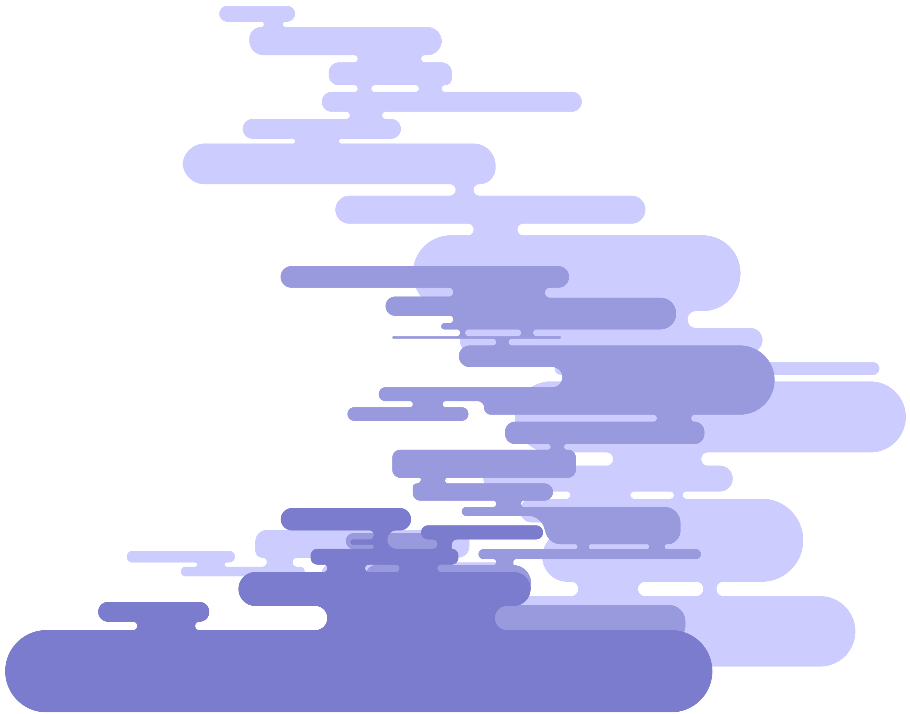
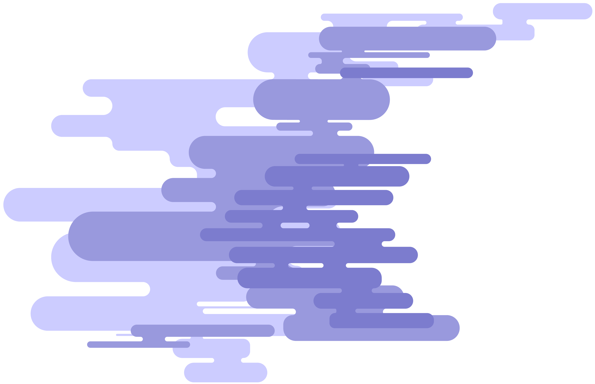
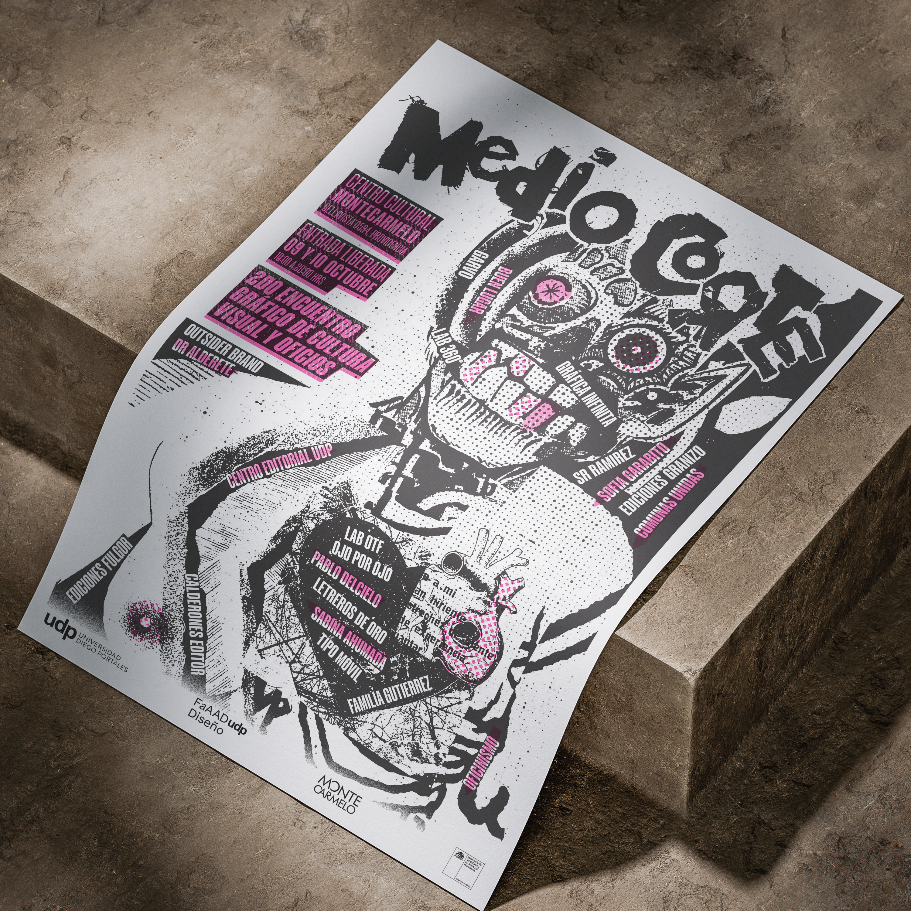
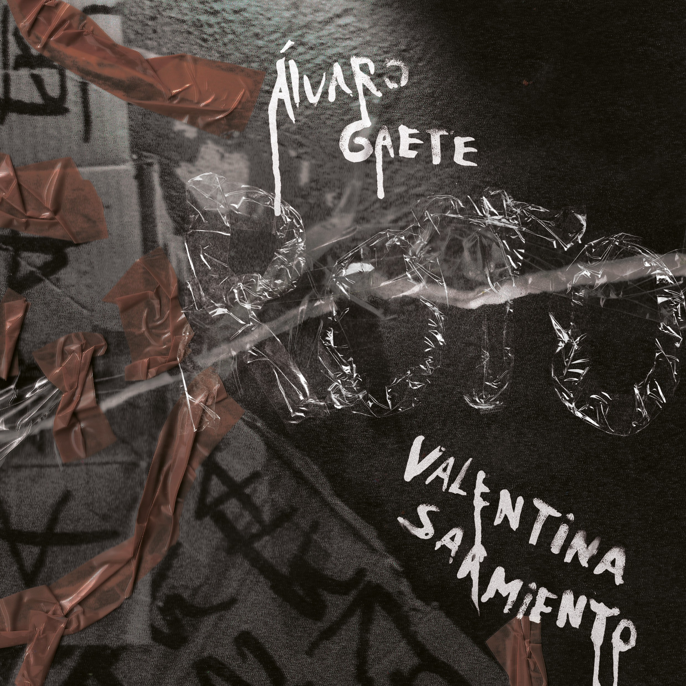

archivo
personal
hecho por una persona de verdad
Jerliana Martinez, Estudiante de diseño.
Santiago, Chile + Remoto
me especializo en identidad de marca, UX/UI y diseño web
Mi trabajo comienza en lo manual, un boceto que con creatividad y paciencia se transforma en un futuro proyecto que refleja las ideas en las que se basó, busco generar una experiencia divertida desde la diversidad de estilos gráficos que puedo manejar.
proyectos
recientes

Museo de los Museos

Propuesta de identidad gráfica hecha para el Museo de los Museos en su 15° aniversario, donde se trabaja en el sistema de identidad y la comunicación gráfica en base a una narrativa planteada bajo el concepto “Recolectando historia(s)”.

Encontrando BADSURA
Proyecto Libro de artista donde se relata toda la carrera desde sus inicios hasta la actualidad del muralista y graffitero venezolano Wolfgang Salazar, conocido como BADSURA.

Medio Corte
Propuesta de identidad gráfica hecha para la feria gráfica Medio Corte 2026, donde se trabaja en el sistema de identidad y la comunicación gráfica en base a una narrativa planteada bajo el concepto “FRANKENSTEIN”.

ROTO
Sistema editorial para la divulgación de la poesía chilena contemporánea. Se presentan los trabajos de Álvaro Gaete y Valentina Sarmiento, mediante una interpretación conceptual se realiza un sistema gráfico representativo de ambos poetas para generar una publicación editorial.
¿tienes curiosidad?
contáctame ¡podemos conversar sobre tu idea y darle vida!
contacto